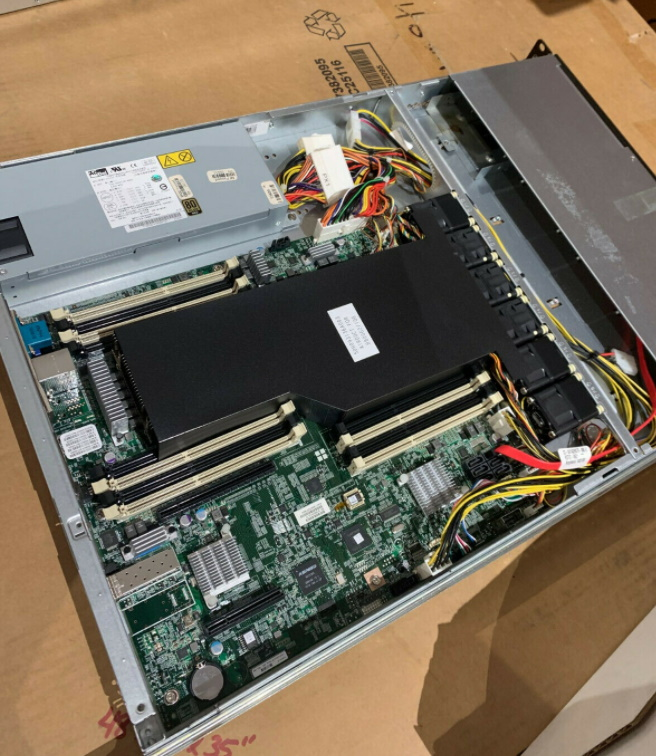

Servers, Security and Sam
Overview
Calling this week a roller coaster would be an understatement, I accepted a security engineering co-op at Blue Origin, got a new server machine, reflashed my laptop to Windows 11, and generally attempted to deal with the academics in the remaining time.
Servers and Operating Systems
“Cause who needs the cloud when you can curse out your machine in person”
Retrospectively, in regard to both my wallet and dwindling sanity, I should’ve just rented out a machine on something like AWS or Azure. But alas, I’d rather be the one to safeguard my own data, and I’m just going to guess that my extensive music library would probably raise a few eyebrows in the wrong places.

Par for my course, when I received the server, I discovered that it only had two USB ports. Needing one of them exclusively for the boot media, the Ethernet Adapter, Keyboard, and Mouse Dongle had to compete for the single port. A thoughtful reader may wonder why an ethernet adapter is required; well, as it turns out that the server came with an RJ45 fiber optic port. So, during the installation process, I was perfectly capable of installing fairly basic operating systems such as Ubuntu Server, but I couldn’t configure the network or even begin to attempt any more complex operating systems. I realize I’ve been ranting for a while, so I’ll leave it to the reader to figure out how I got everything to work.
Joining the Red Team at Blue, Guess I’m in Security Now
So some background, as far as I’m concerned, I’m a software engineer by trade, I’ve had two internships working as one, and it’s safe to say that I know my way around a development team. So when Blue Origin passed me up for a software role, only to have their CISO (chief information security officer) call me - suffice to say, I was shocked. Now that’s not to say I don’t enjoy messing around with software and sites - just ask RIT why their directory page isn’t online right now (don’t actually).
But the pay is great, I’ve been told my mentor has a wicked sense of humor, and I’ll be given a wide scope to try and break things - what’s not to like! - Well, in my case the time it takes to become familiar with breaking things. Regrettably to me (and a relief to others’), I’m still stuck as a student working on that piece of paper we like to call a degree. So it’s out of the frying pan (the job search), and into the fire of spending my free time preparing myself to be the best employee I can.
Alrighty
Well it’s of my opinion that this has gone on for long enough (although I am covering a whole week of my action-packed life), so let’s wrap it up here. For all our sanity’s, my next post will be a break from technology, delving into my equally convoluted personal philosophy instead. Thanks for reading my first post, I really should go write the preface now.
And Then There Was One
-Sam